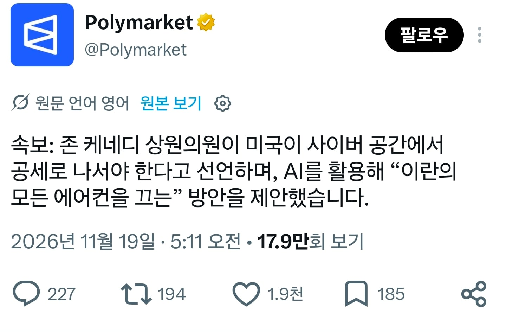

우리 지금 눈온다 색햐 ㅋㅋㅋㅋㅋ

우리 지금 눈온다 색햐 ㅋㅋㅋㅋㅋ
에어컨 끈다고 항복할거였음 진작항복했지;
그럼 히터를 끄고 에어컨을 틀자
미국새끼들이 타국가 문화나 그나라 기후모르는게 하루이틀도 아니고 그래서 미국이 2차대전 이후로 전쟁 승률이 높지않음
히터를 꺼야겠네
전쟁을 무과에 맡겨야지 문과가 간섭하는 순간 조때는겨
케네디에 뭔 상원의원직인 사람이 있나 했더니 존 닐리 케네디 라는 사람이네
서버실 에어컨요